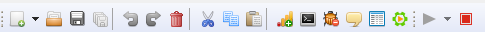

Menu Bar/Tool Bar
The Menu Bar is a graphical control element in a graphical user interface which contains drop-down menus. The Menu Bar is commonly present in Windows application and provides access to functions such as creating or opening files, interacting with an application or displaying help content and documentation manuals.
In our case, the Menu bar contains drop down menus with options not only to do the above mentioned tasks but also importing/exporting projects, setting run related configurations, show/hide elements on the Graphical workspace or canvas and open/close specific windows.
The Tool Bar is a graphical control element on which on-screen buttons, icons, menus, or other input or output elements are placed.
The Hydrograph Tool Bar provides the regular buttons for creating new job, opening a file, cut, copy, paste, delete, undo and redo. Along with this, Hydrograph also has buttons for setting the Run Configuration, Parameter grid and a button to Run a Job.Kill the job. Additionally the user can also change the current UI perspective using the ELT Perspective button.
